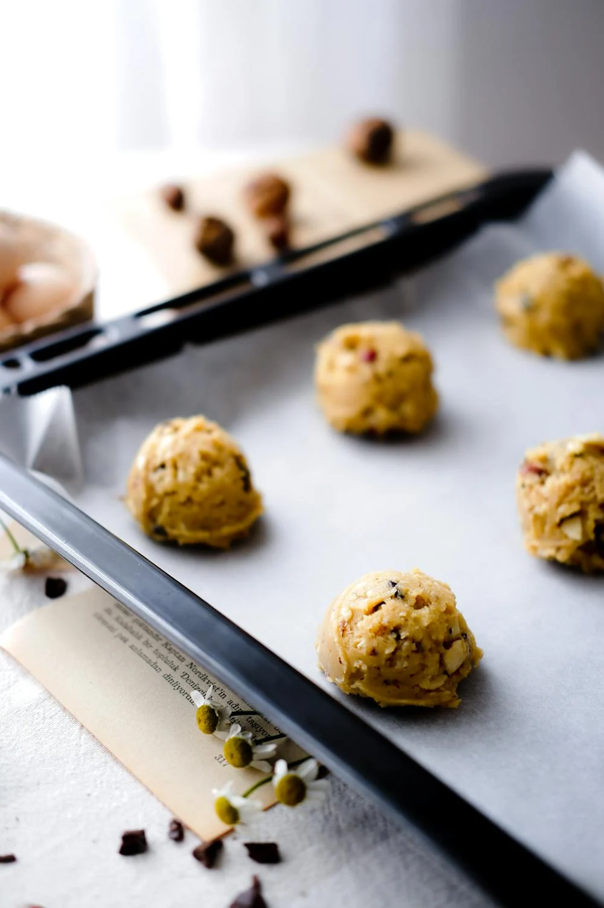

Chocolate Chip Cookies Recipe
Step 1: Gather Ingredients
Baking Ingredients in Containers on a Table by Pexels .
Before starting, make sure you have the following ingredients:
2 1/4 cups all-purpose flour
1/2 teaspoon baking soda
1 cup unsalted butter, room temperature
3/4 cup granulated sugar
3/4 cup packed brown sugar
1 teaspoon salt
2 teaspoons pure vanilla extract
2 large eggs
2 cups semisweet and/or milk chocolate chips
Step 2: Preheat Oven
Turning Up the Heat of the Oven by Pexels .
Preheat your oven to 350 fahrenheit. ( 175 degrees )
* This process usually takes about 10-15 minutes, so make sure to do this before you prepare your cookie dough.
Step 3: Mix Ingredients
Person Mixing Ingredients with Whisk by Pexels .
In a bowl, combine the flour and baking soda. In a separate bowl, beat together the butter, granulated sugar, brown sugar, and salt until smooth.
Add in the vanilla and eggs, and mix until well combined. Gradually add the flour mixture and fold in the chocolate chips.
Step 4: Shape Cookies

Pastries on Metal Baking Tray by Pexels .
Use a cookie scoop or spoon to drop dough onto a baking sheet lined with parchment paper. Leave space between each cookie as they will spread while baking.
Step 5: Bake and Enjoy!
Selective Focus Photography Of Chocolate Cookies by Pexels .
Bake for 10-12 minutes or until the edges are golden brown. Let them cool for a few minutes before transferring to a wire rack.
Enjoy your homemade chocolate chip cookies!